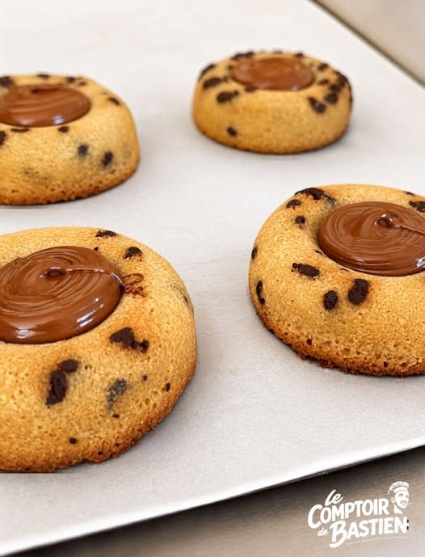
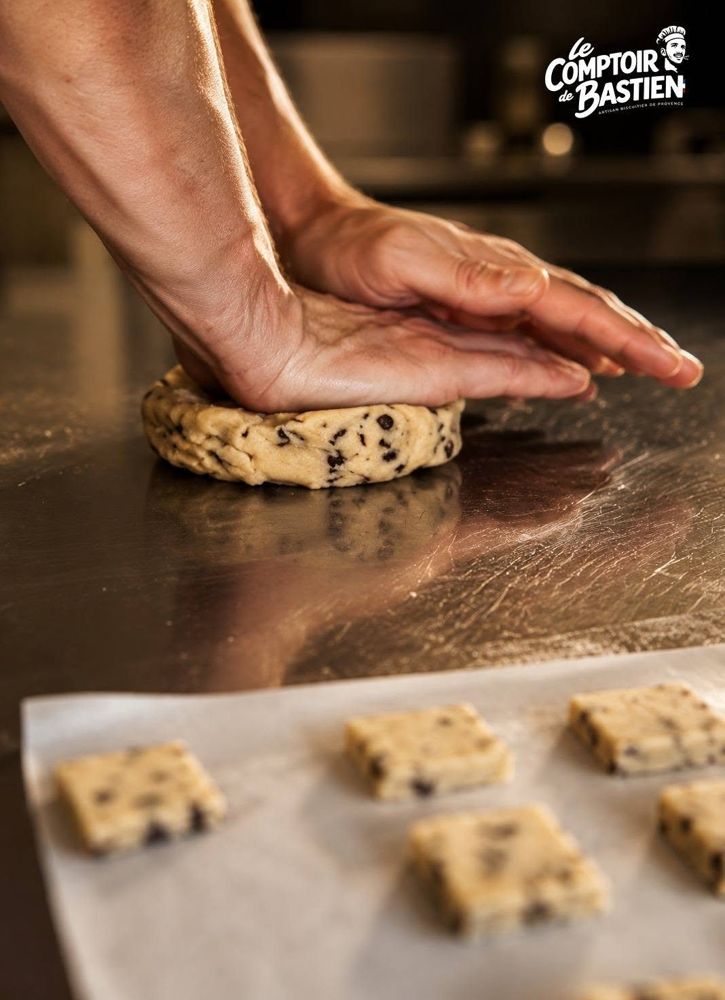
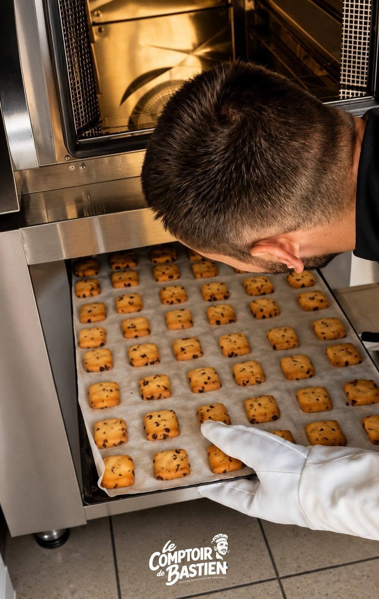

100 % fait maison
Nos produits
Tout ce que vous trouvez en boutique sort de notre atelier de Saint-Martin-de-Brômes. Petites fournées, façonnage à la main, sans conservateur ajouté.
La planche des biscuits
Six recettes, une seule mainLes biscuits de Provence
Les incontournables- Navettesà la fleur d'oranger, la spécialité provençale
- Croquants aux amandesamandes de Provence, miel de Provence, croquants et parfumés
Petits beurre & speculoos
En sachet ou en boîte- Petit beurre vanillevanille bourbon
- Petit beurre citronzestes de citron frais
- Petit beurre pépites de chocolatnotre plus demandé
- Speculooscassonade et épices douces
La chocolaterie & confiserie
Chocolat travaillé maison- Roses des sableschocolat et pétales de céréales
- Amandes caraméliséesen sachet, à grignoter
- Pâtes à tartiner noisettesà la cuillère ou à tartiner
- Tablettes de chocolatprochainement en boutique
- Confituresprochainement en boutique

Idées gourmandes
À offrir ou à s'offrir
- Assortiment 5 biscuits gourmandsle petit + à glisser avec votre boisson
- Boîte collector Provenceboîte métal illustrée, garnie de biscuits
- Boîte collector Riezboîte métal illustrée, garnie de biscuits
- Boîte collector Pétanqueboîte métal illustrée, garnie de biscuits
- Bonbonnièreà venir
- Thés et tisanesen vrac et en coffret

Édition limitée
À déguster sur place ou à emporter
Ces gourmandises-là sont parfaites pour accompagner votre café ou votre thé au salon, ainsi qu'en balade. La sélection change au fil des envies et des saisons.
- Tigréfinancier aux pépites, cœur de pâte à tartiner
- Cakestranche généreuse
- Cookiegros cookie moelleux au chocolat
- Navette briochéela version tendre de la navette
En images
De l'atelier à la vitrine


Bientôt
La boutique en ligne arrive
Nous préparons la vente en ligne pour vous permettre de recevoir nos biscuits partout en France. En attendant, tout se passe à la boutique de Riez.